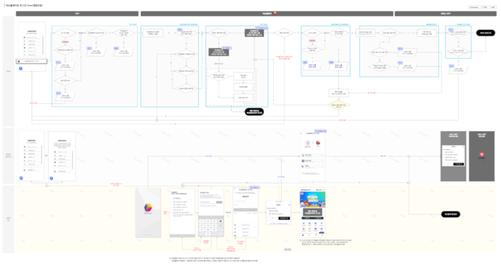
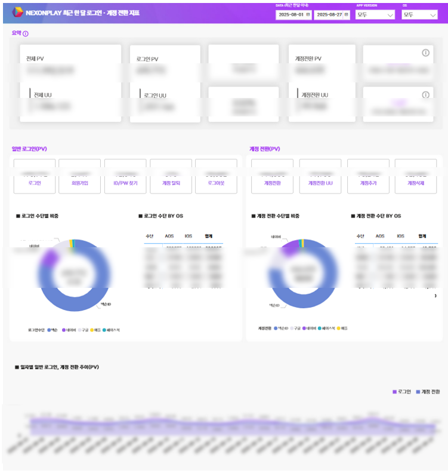
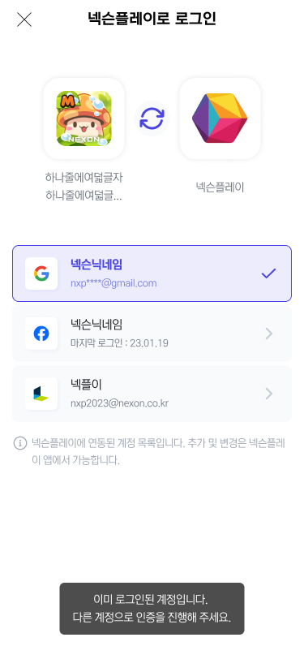

Project 01 · Data-Driven · SSO
넥슨플레이 간편 로그인 설계
개요
계정 전환 기능 도입 및 넥슨플레이를 활용한 간편 로그인(SSO) 도입에 앞서, 대·내외적으로 로그인 행태 분석이 필요했으며, 이를 위한 로그인 지표 대시보드를 설계·전파하고 SSO 기능 상세 기획 및 런칭을 주도.
문제
- 비즈니스 임팩트 파악 필요 — 넥슨플레이 로그인을 외부 앱으로 확장해 플랫폼 생태계를 구축하려 했으나, 실제 유저의 복잡한 로그인 행태(계정 전환·이탈 지점 등) 정밀 데이터 부재로 사업 타당성 검토 지연
- 고객 경험 제고 필요 — 플랫폼 간 연동 시 불규칙한 에러 처리·불명확한 통신 규격으로 도입 난이도↑ 및 고객 경험 파편화
가설
- 유저 로그인 퍼널을 데이터로 가시화해 병목 구간을 제거하면, 간편 로그인 도입 시 전환율 시뮬레이션이 가능해져 사업 확정 속도가 비약적으로 상승할 것이다.
- 인증 플로우를 표준화한 SDK + 케이스별 예외 처리 가이드를 제공하면, 연동 공수가 감소하여 제품의 확산 속도가 빨라질 것이다.
기여
- 데이터 파이프라인 구축 — 화면별·버튼별 로그 코드 설계 및 개발 요청, PowerBI ↔ Snowflake 직접 연동 후 DAX로 유니크 로그인 · 계정 전환 · 사용률 · 1인당 일평균 계정 전환 횟수 등 지표 추출
- 대시보드 설계 — 한 눈에 보이는 요약 지표 영역(툴팁 포함) + 앱 버전 · OS별 필터 + 일반 로그인 vs 계정 전환 비교 구좌 + 로그인 수단별 도넛 + 일자별 시계열
- SSO 제품 전략 · SDK 설계 — 넥슨플레이를 인증 플랫폼으로 격상시키는 SDK 통신 규격 및 인증 정책 설계 주도
- 예외 · 에러 정책 표준화 — 유저 계정 상태별 와이어프레임 설계 + 사용자 친화적 에러 메시지 표준화
- 이해관계자 얼라인먼트 — 개발 · 사업 · 보안 부서 간 복잡한 이해관계를 조율하며 우선순위 확보 및 장기 로드맵 수립
Impact
- 전사 유관 부서의 데이터 접근성 개선으로 간편 로그인 도입 의사결정 리드타임 대폭 단축
- SDK 연동 표준 가이드 수립으로 외부 서비스 도입 시 발생하는 기술 지원 공수 절감 및 연동 효율성 극대화
Reflection
데이터로 가설을 만들고, 스펙으로 그 가설을 시스템에 이식할 수 있다면 제품은 한 단계 빠르게 움직인다.
서비스 플로우 기획
🔒
본 서비스 플로우 문서는 대외비(회사 내부 자료)를 포함하고 있어, 세부 내용은 블러 처리했습니다. 실제 정책·로직이 아닌 기획서 작성 방식과 플로우 설계 구조를 보여주기 위한 참고용으로 첨부했습니다.

TOP · 조건분기 · 예외처리를 스윔레인으로 구조화한 로그인 서비스 플로우 다이어그램 (내용 블러 처리)
PowerBI 대시보드 · 직접 구축

요약 지표(전체·로그인·계정 전환 PV/UU) + 일반 로그인 vs 계정 전환 구좌 비교

넥슨플레이 앱 간편 로그인 화면